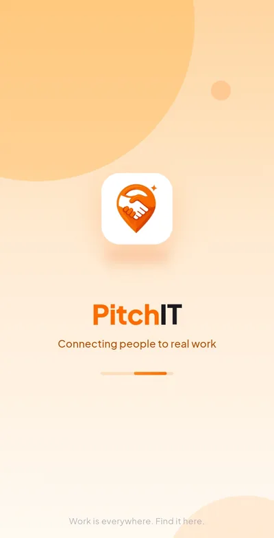
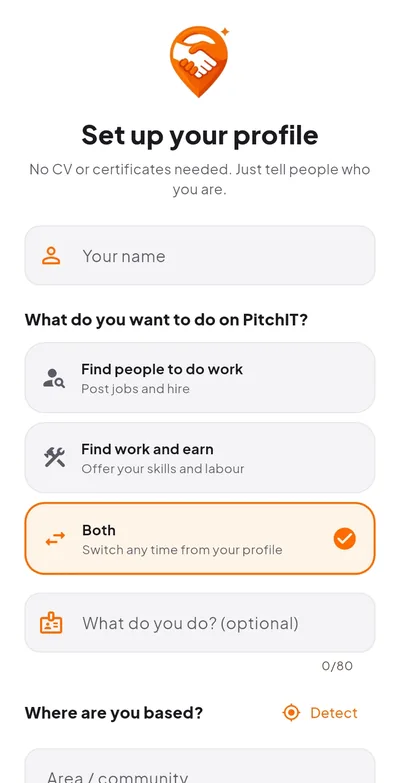

Digital marketplace · Product development
PitchIT
Work is everywhere. Find it here.
PitchIT is a marketplace for every kind of work in Nigeria: farm hands, fish traders, market help, artisans, movers, cleaners, errands and professionals. People who need work done post a job. People who can do it send offers. The customer funds the agreed amount before the work starts.
The demo is the real app running in demo mode: sample data held in your browser and clearly labelled simulated payments. No account is needed and nothing is sent to a server.



- Platform
- Android and web, with layouts for phone, tablet and desktop
- Built with
- Flutter, Supabase, Paystack
- Status
- Working demo. Not yet launched to the public
- My role
- Founder and creative director
The opportunity
Most work in Nigeria never appears on a job board. It happens through word of mouth, at the market, on the farm and by the roadside.
Figures from the NBS Nigeria Labour Force Survey for Q2 2024, as reported by Nairametrics.
That shaped the product. Nobody needs a CV to sign up. Locations are described the way people actually give directions, by landmark, junction and building. And the app has to stay light enough for everyday phones and patchy connections.
Two journeys, one account
The same account can hire and work. A Hiring and Working switch changes the whole navigation to fit the role.
Customer journey
- Post a job with landmarks and photos
- Compare offers and hire
- Fund the job and follow its progress
- Confirm the work and leave a review
Worker journey
- Discover jobs nearby
- Send an offer
- Chat and get directions
- Finish, get paid and build a reputation
- Agreed
- Funded
- Started
- Done
- Confirmed
Features
Everything listed here is built and can be tried in the demo, except live payments, which need a real backend.
Posting any kind of job
13 sectors and 105 subcategories, plus your own category. Nine work arrangements, from one time and hourly to seasonal and emergency, and team jobs with several workers.
Directions people understand
GPS, a pin on the map or a typed place, with the main landmark, street or junction, building, written directions and reference photos.
Location privacy
Before funding, workers only see an approximate area. The exact pin unlocks for the hired worker after funding, and the database enforces it.
Discovery
Search, filters for category, budget, remote work and distance, and a Nearby map with price pins.
Offers and hiring
Workers offer a price, availability and experience. Customers compare offers by recommended, lowest price or top rated, and team slots can never overfill.
Payments
A clearly labelled simulated mode, plus Paystack test and live modes verified on the server.
Realtime chat
One conversation per job and worker, with photos, read receipts and notifications.
Trust and safety
Reviews only after completion, phone and ID verification badges, reports, and disputes with evidence, an admin decision and one appeal.
Admin panel
Users, jobs, disputes, categories and review moderation, with every admin action recorded.
Every screen size
A bottom bar on phones, a side rail on tablets and desktops, and two pane layouts for jobs and messages.
Design direction
Warm, confident and plain spoken. A bright orange on soft cream, rounded Plus Jakarta Sans type and large touch targets, so the app feels friendly on a cheap phone in bright sunlight.
The words matter as much as the visuals. Screens say Find work and Hire someone, not marketplace jargon, and every money step says clearly when a payment is simulated.
Process and quality
Research first
Started from how work is found and described in Nigeria, which led to the sector list, landmark directions and the no CV sign up.
Rules in the database
Privacy, slot limits and funding are enforced by Postgres row level security, not just hidden in the interface.
Tested like a real product
More than 50 security and workflow checks on a real Postgres 16 database, plus unit and widget tests for sign in, posting, offers, hiring and funding.
Built on every change
Continuous integration analyses the code, runs the tests, takes screenshots at four sizes and builds the web app and the Android APK.
A demo anyone can open
Without backend keys the app runs in demo mode, which is the version embedded on this page.
Stack
- Flutter
- Dart
- Supabase
- PostgreSQL
- Row level security
- Edge Functions
- Paystack
- OpenStreetMap
- GitHub Actions
Screens
Screenshots from the Android build. Select one to view it full size.
- Splash
- Welcome

Set up profile- My jobs
 Messages
Messages Profile
Profile


Status
A working product in demo mode, not yet launched to the public.
The next steps are connecting the production backend, live payments and a first group of real customers and workers.